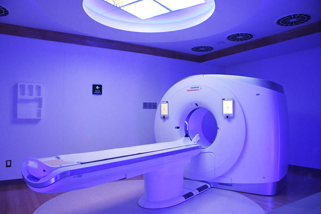

SERVICIOS DESTACADOS
TOMOGRAFIA POR EMISION DE POSITRONES (PET)
La tomografía por emisión de positrones, es una tecnología sanitaria propia de la medicina nuclear. Es un medio eficaz para ayudar a identificar diversos trastornos, tales como el cáncer, la enfermedad cardíaca y los trastornos cerebrales. El médico puede usar esta información para ayudar a diagnosticar, controlar o tratar la afección.
ECOGRAFIA 5D
La ecografía 5D es capaz de realizar una reconstrucción más definida y realista del feto. La nueva generación de ecógrafos de alta resolución incrementa de manera decisiva la capacidad diagnóstica y la detección de malformaciones fetales. Esta tecnología ofrece una reconstrucción mucho más definida y realista de cualquier estructura que sea necesario observar.